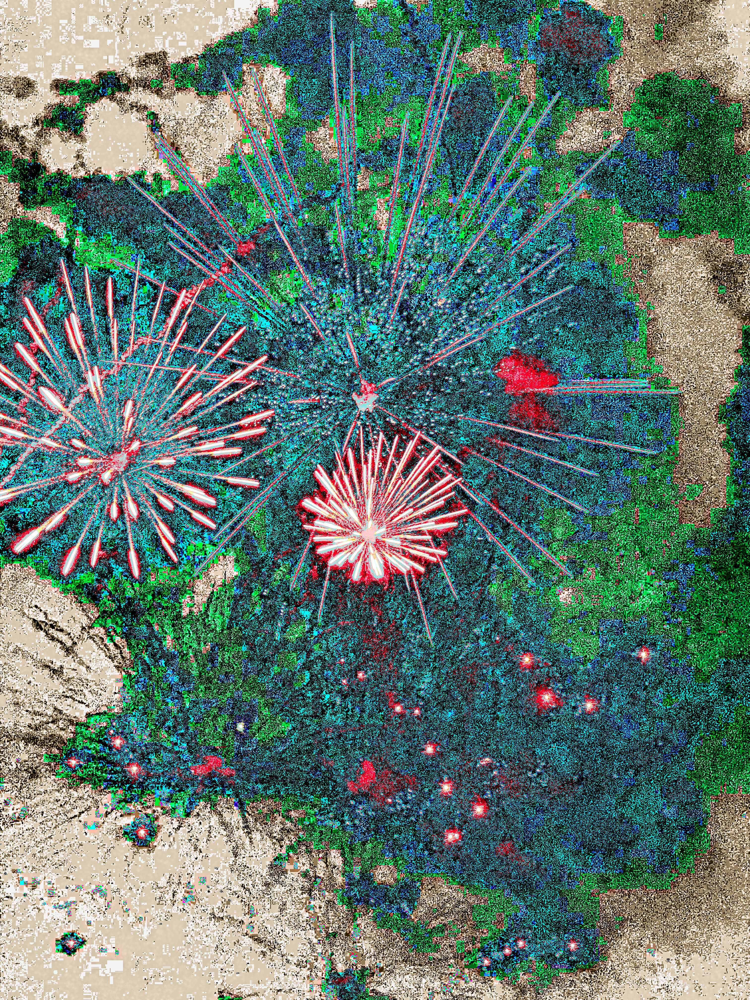
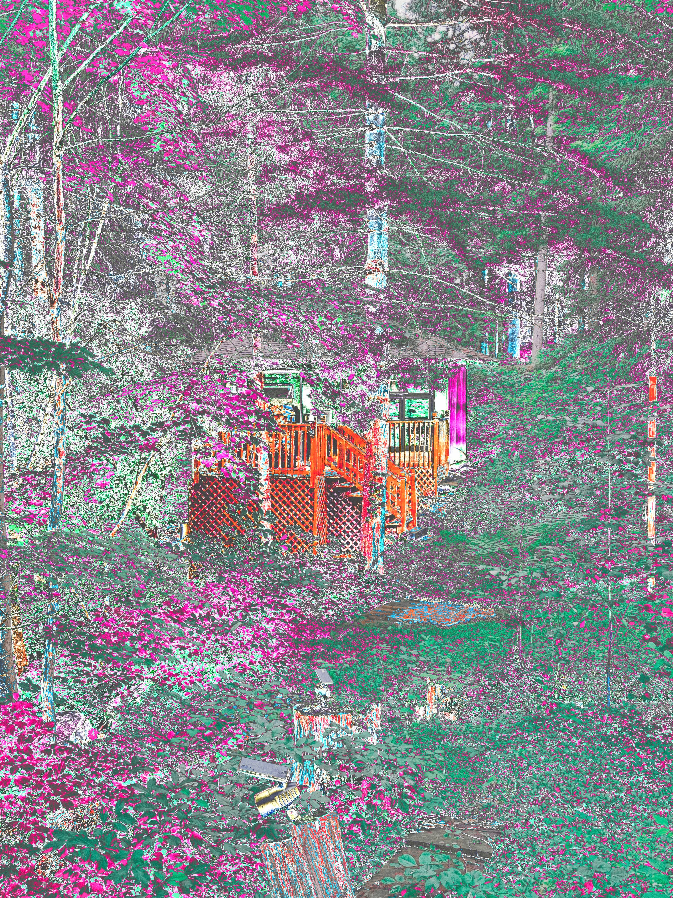
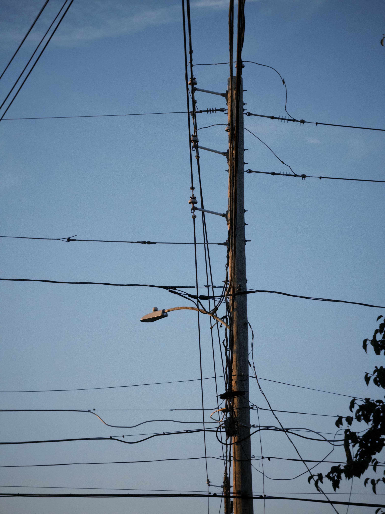

Fireworks at Dorney Park – I love messing around with the colors of the fireworks.

Cabin in the woods – took the photo with my phone.
Tree in the highway – somewhere in PA.
Pants I wore to the BabyMetal concert – somewhere in PA.
A photo I took after a run – PA.
The Pagoda, sadly wasn't open for the public – Reading, PA.
花 – somewhere.
鳩 – A pigeon that got inside my house.

A post near to where I used to live.
little shot on the street - Allentown, Pa.
A Bawling night - Allentown, Pa
Wind creek - Bethlehem, Pa.
First snow of the 2024 winter season – Allentown, Pa.
Park with snow – Allentown, Pa.
Dog Brisa - Nicaragua, Masaya
Dog Oddy - Nicaragua, Masaya
Montelimar - Nicaragua.

Wind Creek - Bethlehem.

graphity on a garage - Allentown.

Sayre Park Field - Bethlehem.

Central Park - New York, NY.

Flowers - Reading, Pa.

Grand Plaza - Allentown, Pa.
river that goes thru the town :3